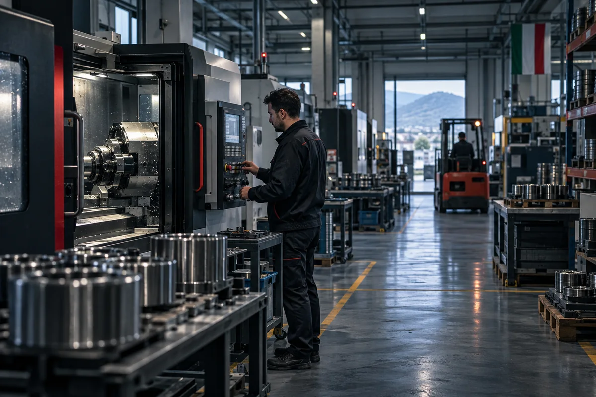
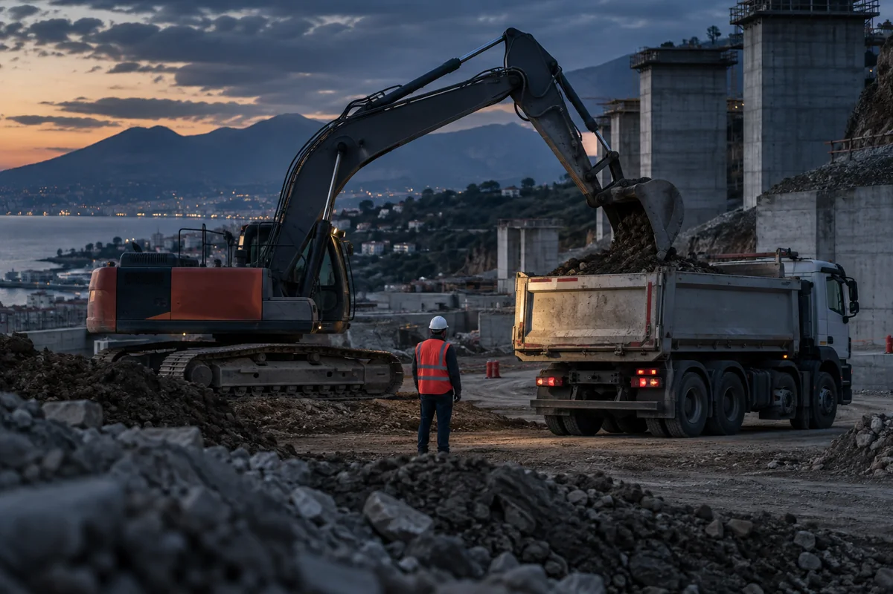

RCT · RCO · RCI
Responsabilità civile
Danni a terzi, rivalse per infortuni dei dipendenti e responsabilità del committente. Il punto decisivo sono definizioni, esclusioni ed estensioni.
Avvia la simulazioneTutte le coperture
Quattro aree, diciassette famiglie di servizio. Leggi le situazioni, riconosci quelle che potrebbero riguardarti e parti dalla domanda che ti fa pensare: “Questo può succedere anche a me?”.
Dalla responsabilità civile alla continuità operativa: coperture costruite intorno a cantieri, dipendenti, beni, contratti e decisioni.
Se domani un danno fermasse il lavoro, sai quali costi resterebbero a tuo carico e per quanto tempo?
Danni a terzi, rivalse per infortuni dei dipendenti e responsabilità del committente. Il punto decisivo sono definizioni, esclusioni ed estensioni.
Avvia la simulazioneDanni all’opera durante l’esecuzione, responsabilità verso terzi e difetti gravi che emergono dopo la consegna.
Avvia la simulazione
Incendio, eventi naturali, guasti e danni diretti a capannoni, impianti, attrezzature e merci.
Avvia la simulazioneCosti fissi, margine e spese straordinarie quando un danno coperto ferma o rallenta la produzione.
Avvia la simulazioneProtezione del patrimonio personale per richieste connesse a decisioni e responsabilità di gestione.
Avvia la simulazioneRipristino dei sistemi, interruzione, responsabilità per dati e assistenza specialistica dopo un attacco.
Avvia la simulazioneDall’auto e dalla moto di tutti i giorni ai veicoli aziendali, ai mezzi d’opera e alle merci: ogni modo di muoversi porta esigenze diverse.
La polizza che hai oggi riflette davvero chi guida, come usi il veicolo e ciò che trasporti?

Responsabilità per i danni causati a terzi con l’auto. Si valutano massimali, formula di guida e uso del veicolo; le eventuali garanzie accessorie si scelgono a parte.
Avvia la simulazioneResponsabilità per i danni causati a terzi con la moto. Contano i conducenti, l’utilizzo effettivo e la scelta consapevole di eventuali protezioni aggiuntive.
Avvia la simulazioneGestione coordinata di furgoni, autocarri e auto aziendali, con garanzie accessorie coerenti con l’uso.
Avvia la simulazione
Danni e responsabilità durante il lavoro a mezzo fermo, un’area che la sola RCA non esaurisce.
Avvia la simulazioneDanni, furto ed eventi che colpiscono la merce durante trasporto, sosta e operazioni accessorie.
Avvia la simulazioneResponsabilità contrattuale e limiti di risarcimento, inclusi i criteri per unità di peso.
Avvia la simulazioneL’immobile, ciò che contiene e le responsabilità che nascono dal possesso: per la famiglia e per gli immobili dell’azienda.
Se una perdita d’acqua danneggiasse il vicino o un evento atmosferico colpisse il fotovoltaico, sapresti cosa viene rimborsato?
Incendio, acqua, eventi atmosferici, furto e assistenza per l’immobile e i beni custoditi.
Avvia la simulazioneDanni involontari causati dall’immobile a vicini, terzi o parti comuni.
Avvia la simulazioneDanni diretti, eventi atmosferici, guasti e perdita di produzione dell’impianto.
Avvia la simulazioneCoperture per proteggere reddito, salute, famiglia e progetti nel tempo, costruite sulle priorità della singola persona.
Se per alcuni mesi non potessi lavorare, il reddito e i progetti della tua famiglia resterebbero protetti?
Indennizzi per invalidità, diaria e spese connesse a un infortunio professionale o nel tempo libero.
Avvia la simulazioneUn capitale per famiglia, soci o azienda se viene a mancare la persona assicurata.
Avvia la simulazioneRicoveri, diagnostica, interventi e prestazioni sanitarie secondo il livello di protezione scelto.
Avvia la simulazioneVersamenti e obiettivi costruiti in funzione dell’orizzonte temporale e della posizione previdenziale.
Avvia la simulazione